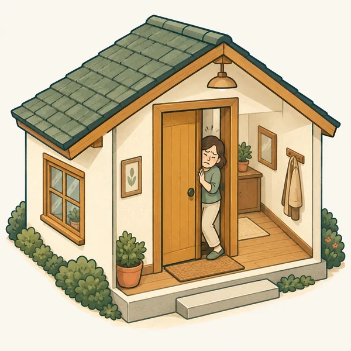
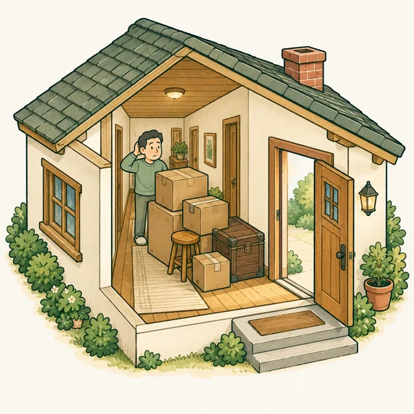
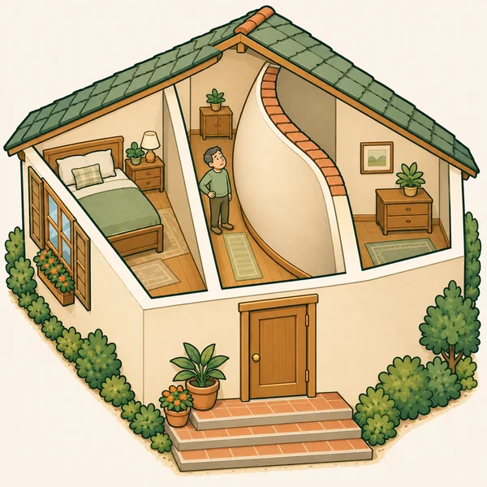
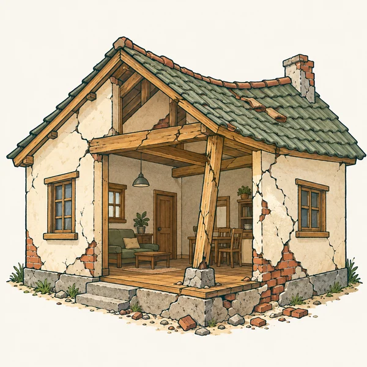
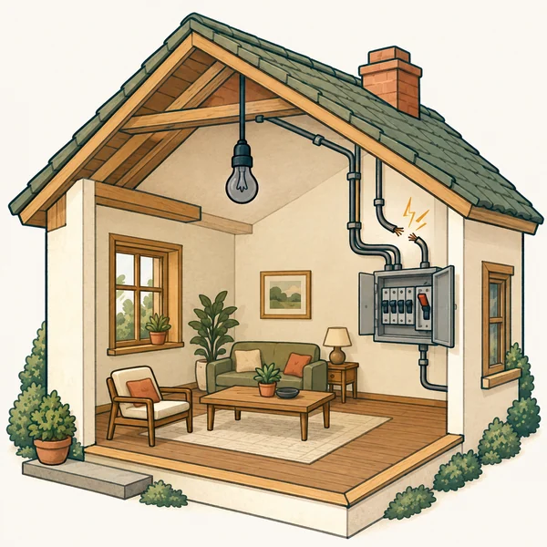

心臟超音波
看結構，也看功能
就像仔細查看房子的結構與動線，了解心臟各個部位如何運作。
- 瓣膜的開合與血流
- 心臟大小與心肌厚度
- 心臟收縮的力量
- 是否有腫塊或其他結構異常
能幫助了解結構與功能；需要時，醫師會再安排其他檢查。
門、走道、牆壁、電路與水管，幫助我們理解不同的心臟問題。

門要能打開讓人通過，也要能關緊。
瓣膜變窄，可能讓血液通過時受到阻礙。
瓣膜逆流時，部分血液會往回流，讓心臟向前送血的效率變差。

東西擋住走道，難以通過。
心臟內少見的腫塊，可能擋住血流通道。

牆壁變厚、歪斜，空間改變了。
心肌增厚（如 HCM）或形狀改變，可能影響心臟功能。

地震、老化，讓樑柱牆面受損。
心肌受損或心臟擴大，可能影響送血能力。

電線或開關故障，供電失常。
心跳太慢、太快或停頓，可能影響有效送血。
供應管線堵塞，需要的水送不到。
供應心肌的冠狀動脈變窄，可能讓心肌缺血。
房屋圖像是幫助理解的比喻，並非心臟解剖示意。
醫師會先了解症狀、發作經過與用藥，配合理學檢查、血壓及需要的抽血，再決定檢查安排。
就像仔細查看房子的結構與動線，了解心臟各個部位如何運作。
有些異常只偶爾出現，記錄多久，要配合發作頻率與風險。
如果有胸悶、胸痛、心肌局部收縮異常，或其他缺血線索，醫師會評估是否需要進一步檢查。
冠狀動脈供血不足，也可能影響心肌功能。